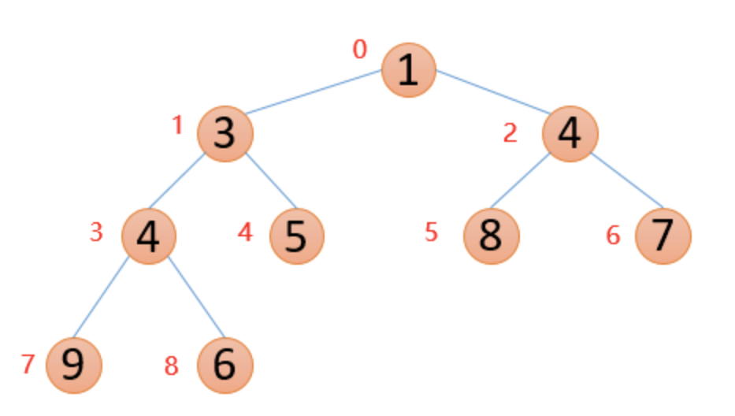

该系列为本人的学习笔记，主要由本人整理书写而成。部分内容来自教材、视频课程等，不能保证完全原创性。
萌新的学习笔记，写错了恳请斧正。
# 堆的概念
如果有一个关键码的集合 ，把它的所有元素按完全二叉树的顺序存储方式存储在一个一维数组中，并满足： 且 （ 且 ），，则称为小堆（大堆）。
上面这段定义似乎有些难以理解，但其实非常简单，堆就是一个完全二叉树，但是要满足所有子节点都小于其父节点或者所有父节点都小于其子节点。小堆也叫小根堆（根节点最小），大堆也叫大根堆（根节点最大）。
下面是大根堆和小根堆的两张示意图：

在这两张示意图中，大根堆的存储数组为 [9,6,8,5,3,4,7,2,1]，小根堆是 [1,3,4,4,5,8,7,9,6]
# 堆的实现
我们想要构建一个堆，一般是给出一个数组，然后调整其元素顺序变成堆；或者是从一个空堆开始逐步插入元素构建堆，这里就涉及到堆的调整算法。
对于不同的应用需求，我们可以选择向上调整构建堆或者向下调整构建堆，下面我们来详细说明这两者的区别。
# 由数组调整为堆
由数组调整为堆我们一般选择通过向下调整算法来构建堆
# 堆向下调整算法
堆向下调整算法可以用来调整某一个元素的位置。
大根堆的向下调整：不断的将某个选定的节点与其两个子节点比较，如果子节点有比该节点大的，就将子节点中更大的那一个与该节点交换，然后反复重复这个过程直到该节点不能继续调整。
小根堆的向下调整：不断的将某个选定的节点与其两个子节点比较，如果子节点有比该节点小的，就将子节点中更小的那一个与该节点交换，然后反复重复这个过程直到该节点不能继续调整。
# 通过向下调整算法构建堆
- 找到倒数第一个非叶子节点：在一个完全二叉树中，如果节点总数为，则倒数第一个非叶子节点的位置是。这个节点之后的所有节点都是叶子节点，它们自然满足堆的性质。
- 从该非叶子节点开始向下调整：对于每个非叶子节点，应用向下调整算法，确保当前节点以及其子树满足堆的性质。
- 逆序遍历所有非叶子节点：继续向上，对每个非叶子节点重复进行向下调整的操作，直到根节点也被调整完成。
这个过程被称为 “堆化”，看起来很复杂，但其实效率非常非常高。
我们可以这样分析：
- 树的最底层拥有约𝑁/2N/2 个节点，但这些节点都是叶子节点，不需要进行向下调整。
- 上一层拥有约𝑁/4N/4 个节点，每个节点最多进行 1 次比较。
- 再上一层拥有约𝑁/8N/8 个节点，每个节点最多进行 2 次比较。
- 依此类推，直到根节点，每层的节点数大约是上一层的一半，而每个节点需要的比较次数大约是其所在层的深度。
- 将这个过程的比较次数加总起来，会发现总的比较次数是。
也就是说这样构建一个堆的时间复杂度仅为。
# 从空堆开始插入节点
从空堆开始插入节点，我们一般选择通过向上调整算法来构建堆
# 堆向上调整算法
堆的向上调整算法与向下调整算法相反，是比较当前节点与其父节点并在必要时交换。
大根堆的向上调整：将当前节点的值与其父节点的值进行比较，如果当前节点的值大于其父节点的值，则需要交换这两个节点，重复这个过程。
小根堆的向上调整：将当前节点的值与其父节点的值进行比较，如果当前节点的值小于其父节点的值，则需要交换这两个节点，重复这个过程。
# 通过向上调整算法构建堆
- 逐个添加元素：从空堆开始，逐个将新元素添加到堆的末尾，即堆的下一个可用位置，以保持完全二叉树的结构。
- 向上调整：对于每个新添加的元素，应用向上调整算法，以确保新元素的添加不会破坏堆的性质。新元素与其父节点比较，并在需要时进行交换，这个过程一直持续到达堆的顶部或不需要进一步交换为止。
- 重复直到所有元素添加完毕：重复上述过程，直到所有元素都被添加到堆中，且整个堆满足最大堆或最小堆的性质。
该算法每次插入的时间复杂度是，因为每次插入后的向上调整最多需要从堆的底部调整到顶部，即跨越堆的高度，堆的高度为。但是并不能直接将它们相乘，因为这里的 N 是动态变化的，是从 1 开始逐渐增加到 N，那么我们就能得到如下计算式：
由根据斯特林近似，我们知道：
那么其时间复杂度就是。
# 删除堆顶的元素
如果我们想要删除堆中的一个元素，我们当然不能直接像数组那样把后面的元素往前挪，那我们应该怎么做呢？
- 交换元素：将堆顶元素与堆最后一个元素交换
- 删除数据：将原堆顶元素删除
- 向下调整：对新的堆顶执行向下调整操作
这样我们就得到了删去堆顶元素的新堆啦～
# 实现代码
#pragma once | |
#include <stdlib.h> | |
#include <string.h> | |
#include <assert.h> | |
//#define MIN_HEAP | |
#define MAX_HEAP | |
#ifdef MIN_HEAP | |
#define HEAP_COMPARE(a, b) ((a) < (b)) | |
#endif // MIN_HEAP | |
#ifdef MAX_HEAP | |
#define HEAP_COMPARE(a, b) ((a) > (b)) | |
#endif // MAX_HEAP | |
typedef int HPDataType; | |
typedef struct Heap | |
{ | |
HPDataType* data; | |
int size; | |
int capacity; | |
} Heap; | |
void HeapInit(Heap* php); | |
void HeapInitArr(Heap* php, HPDataType* a, int n); | |
void HeapDestory(Heap* php); | |
void HeapPush(Heap* php, HPDataType x); | |
HPDataType HeapTop(Heap* php); | |
void HeapPop(Heap* php); // 删除堆顶元素 | |
int HeapSize(Heap* php); | |
int HeapEmpty(Heap* php); | |
void Swap(HPDataType* a, HPDataType* b); | |
void AdjustDown(HPDataType* data, int size, int parent); | |
void AdjustUp(HPDataType* data, int child); |
#define _CRT_SECURE_NO_WARNINGS | |
#include "Heap.h" | |
void HeapInit(Heap* php) | |
{ | |
assert(php); | |
php->data = NULL; | |
php->size = 0; | |
php->capacity = 0; | |
} | |
void HeapInitArr(Heap* php, HPDataType* a, int n) | |
{ | |
assert(php); | |
php->data = (HPDataType*)malloc(n * sizeof(HPDataType)); | |
if (php->data == NULL) | |
{ | |
perror("malloc fail\n"); | |
exit(EXIT_FAILURE); | |
} | |
memcpy(php->data, a, n * sizeof(HPDataType)); | |
php->size = php->capacity = n; | |
// 向下调整 | |
for (int i = (n - 2) / 2; i >= 0; --i) | |
{ | |
AdjustDown(php->data, php->size, i); | |
} | |
} | |
void HeapDestory(Heap* php) | |
{ | |
assert(php); | |
free(php->data); | |
php->data = NULL; | |
php->size = php->capacity = 0; | |
} | |
void Swap(HPDataType* a, HPDataType* b) | |
{ | |
HPDataType tmp = *a; | |
*a = *b; | |
*b = tmp; | |
} | |
void AdjustUp(HPDataType* data, int child) | |
{ | |
int parent = (child - 1) / 2; | |
while (child > 0) | |
{ | |
if (HEAP_COMPARE(data[child], data[parent])) | |
{ | |
Swap(&data[child], &data[parent]); | |
child = parent; | |
parent = (child - 1) / 2; | |
} | |
else | |
{ | |
break; | |
} | |
} | |
} | |
void HeapPush(Heap* php, HPDataType x) | |
{ | |
assert(php); | |
// 扩容 | |
if (php->size == php->capacity) | |
{ | |
int newcapacity = php->capacity == 0 ? 6 : php->capacity * 2; | |
HPDataType* tmp = (HPDataType*)realloc(php->data, newcapacity * sizeof(HPDataType)); | |
if (tmp == NULL) | |
{ | |
perror("realloc fail\n"); | |
exit(EXIT_FAILURE); | |
} | |
php->data = tmp; | |
php->capacity = newcapacity; | |
} | |
// 尾插 | |
php->data[php->size++] = x; | |
// 向上调整 | |
AdjustUp(php->data, php->size-1); | |
} | |
HPDataType HeapTop(Heap* php) | |
{ | |
assert(php); | |
assert(php->size > 0); | |
return php->data[0]; | |
} | |
void AdjustDown(HPDataType* data, int size, int parent) | |
{ | |
int child = parent * 2 + 1; | |
while (child < size) | |
{ | |
if (child + 1 < size && HEAP_COMPARE(data[child + 1], data[child])) | |
{ | |
++child; | |
} | |
if (HEAP_COMPARE(data[child], data[parent])) | |
{ | |
Swap(&data[child], &data[parent]); | |
parent = child; | |
child = parent * 2 + 1; | |
} | |
else | |
{ | |
break; | |
} | |
} | |
} | |
void HeapPop(Heap* php) | |
{ | |
assert(php); | |
assert(php->size > 0); | |
Swap(&php->data[0], &php->data[php->size - 1]); | |
--php->size; | |
AdjustDown(php->data, php->size, 0); | |
} | |
int HeapSize(Heap* php) | |
{ | |
assert(php); | |
return php->size; | |
} | |
int HeapEmpty(Heap* php) | |
{ | |
assert(php); | |
return php->size == 0; | |
} |
# 堆的作用
堆可以用于堆排序和 TopK 问题，具体的会在下一篇笔记讲解。